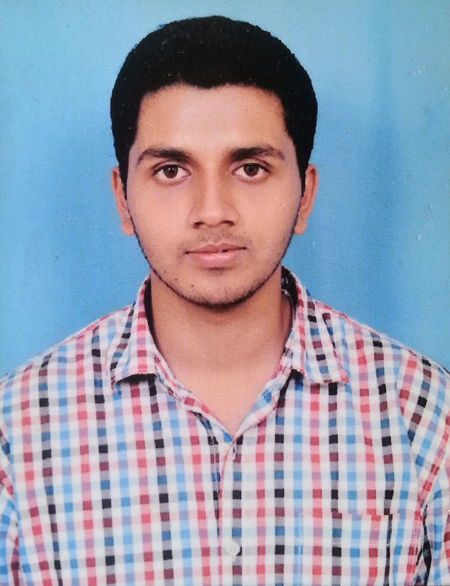

<div class="container">
	<div class="row">
        <div id="speaker-detail" class="col-lg-6 col-lg-offset-3">
            <div class="row">
            	<button title="Close (Esc)" type="button" class="mfp-close">×</button>
                
                <div class="col-md-4 col-lg-4">
                    <br />                    
                    <i class="fa fa-lg fa-facebook-square"></i><a href="https://www.facebook.com/Vinay.dc">Facebook</a></br> 					
					<i class="fa fa-lg fa-google-plus-square"></i><a href="https://plus.google.com/106754205354501660012">Google +</a></br> 																		
                </div>
				
				
                    
                <div class="col-md-8 col-lg-8">
                    <h2>Vinay DC</h2>
                    <h3>Developer</h3>
                    <p>Vinay DC, student of MIT, pursuing Engineering in Electronics and Communication. He did his schooling in Marimallappas High School and completed college at Gurukula Vidhyapeetha. Later he opted for ECE. Presently he is doing a project "PiScope" under the guidance of Prof.Srinivasa M.G. Photography is his hobby. </p>
                </div>
            
            </div>
        </div>
    </div>
</div>